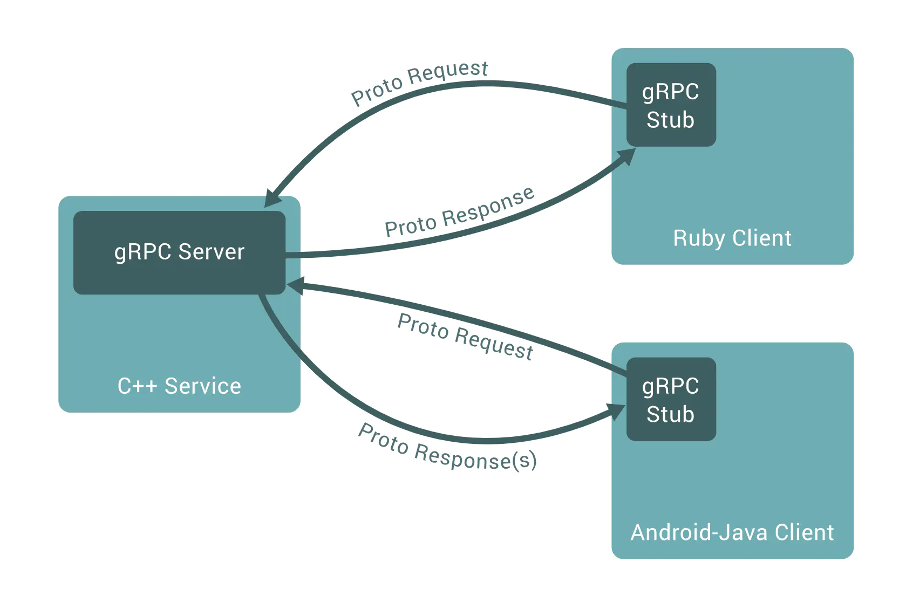

# Conception
所谓 RPC (remote procedure call 远程过程调用) 框架实际是提供了一套机制，使得应用程序之间可以进行通信，而且也遵从 server/client 模型。使用的时候客户端调用 server 端提供的接口就像是调用本地的函数一样。如下图所示就是一个典型的 RPC 结构图

gRPC 其实就是 google 在 rpc 基础上定义了一套自己的使用方式，也可说成是 google 的 prc 方式开发.
学习 gPRC 得学习 Protocol Buffers, 它可以用来定义消息和服务.
然后只需要实现服务即可，剩余的 gPRC 代码将会自动为你生成.
.proto 这个文件可以使用于十几种开发语言 (包括服务端和客户端), 并且允许你使用同一个框架来支持每秒百万级以上的 PRC 调用.
# 开发模式
gPRC 使用合约优先的 API 开发模式，默认使用 Protocol buffers (protobuf) 作为接口设计语言 (IDL), 这个.proto 文件包括两部分:
- gPRC 服务的定义
- 服务端和客户端之间传递的消息
# 开发环境
VSCode 扩展插件: vscode-proto3, Clang-Format
Windows 还需要安装 Clang, Widnows 安装地址：Clang download for windows Windows (64-bit) (.sig)
下载后安装过程中可以选择 Add LLVM to the system PATH for all users
# VSCode 一些常用操作
Ctrl+, 打开设置面板
Ctrl+shift+p 搜索 theme 主题样式 -> File icon theme -> Install Additional File Icon Themes... -> 可以选择 Material Icon Theme， 装完主题之后点击右下角蹦出的 Activate 激活